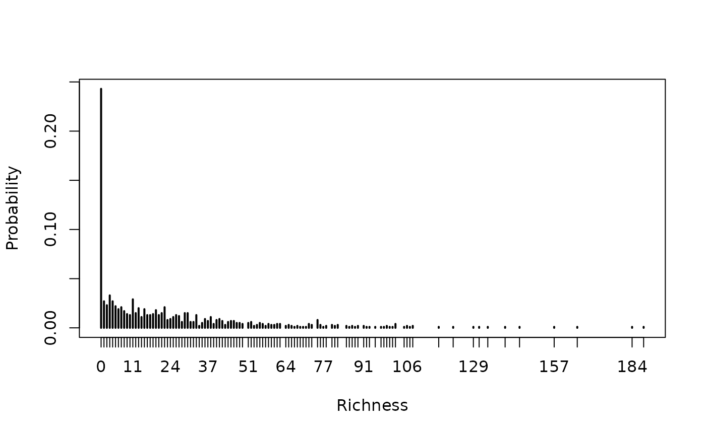

Simulating richness through birth-death processes
Source:R/simulateBirthDeathRich.R
simulateBirthDeathRich.RdsimulateBirthDeathRich calculates the number of species at a certain
point in time, following a birth-death process.
Arguments
- t
Point in time which richness will be simulated.
- S
A numeric representing the per-capita speciation rate (in number of events per lineage per million years). Must be larger than
E.- E
A numeric representing the per-capita extinction rate (in number of events per lineage per million years). Must be smaller than
S.- K
A numeric representing the extinction fraction (i.e.,
K=E/S). Must be either zero or a positive which is number smaller than one.- R
A numeric representing the per-capita Net Diversification rate (i.e.,
R=S-E). Must be a positive number.
Examples
# running a single simulation:
SS <- 0.40
EE <- 0.09
tt <- 10 #in Mya
simulateBirthDeathRich(t = tt, S = SS, E = EE)
#> [1] 23
#running many simulations and graphing results:
nSim <- 1000
res <- vector()
for(i in 1:nSim){
res <- c(res,
simulateBirthDeathRich(t = tt, S = SS, E = EE))
}
plot(table(res)/length(res),
xlab="Richness", ylab="Probability")
